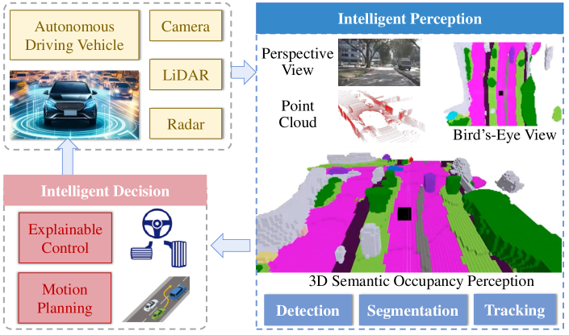

3D Occupancy（占有率）知覚技術は、自律走行車のために密な3D環境を観察・理解することを目的としています。その包括的な知覚能力から、この技術は自律走行知覚システムのトレンドとして浮上しており、産業界とアカデミアの両方から大きな注目を集めています。従来のBird's-Eye View（BEV）知覚と同様に、3D Occupancy知覚はマルチソース入力と情報融合の必要性という性質を持ちます。しかし異なる点として、2D BEVでは無視されていた垂直方向の構造を捉えることができます。本サーベイでは、3D Occupancy知覚に関する最新の研究をレビューし、様々な入力モダリティを持つ手法を深く分析します。具体的には、一般的なネットワークパイプラインをまとめ、情報融合技術を強調し、効果的なネットワーク訓練について議論します。最も人気のあるデータセットにおける最先端のOccupancy知覚性能を評価・分析します。さらに、課題と将来の研究方向について議論します。
自律走行は都市交通効率を改善し、エネルギー消費を削減できます。信頼性が高く安全な自律走行には、周囲環境を理解する、すなわち観察する世界を知覚する能力が不可欠です。現在、BEV（鳥瞰図）知覚が主流の知覚パターンであり、環境を記述する絶対スケールとオクルージョンなしという利点があります。BEV知覚はマルチソース情報融合（多様な視点・モダリティ・センサー・時系列からの情報など）と多数の下流アプリケーション（説明可能な意思決定や運動計画など）のための統一表現空間を提供します。しかし、BEV知覚は高さ情報を監視しないため、3Dシーンの完全な表現を提供できません。
この問題に対処するため、現実世界の密な3D構造を捉えるOccupancy知覚が自律走行向けに提案されました。この新興の知覚技術は、ボクセル化された世界の各ボクセルの占有状態を推論することを目的とし、オープンセットのオブジェクト・不規則形状の車両・特殊な道路構造に対して強い汎化能力を持ちます。パースペクティブビューやBEVなどの2Dビューと比較して、Occupancy知覚は3D属性を持つため、3D検出・セグメンテーション・追跡などの3D下流タスクにより適しています。
アカデミアと産業界において、全体的な3Dシーン理解のためのOccupancy知覚は意義深いインパクトを持ちます。学術的な観点から、複数センサー・モダリティ・時系列を含む複雑な入力形式から現実世界の密な3D占有率を推定することは挑戦的です。産業的な観点からは、各自律走行車へのLiDARキットの展開はコスト高です。カメラをLiDARの安価な代替として使用するビジョン中心のOccupancy知覚は、車両機器メーカーの製造コストを削減するコスト効果の高いソリューションです。
Occupancy知覚の要は完全で密な3Dシーン（オクルージョン領域の理解を含む）を把握することにあります。しかし、単一センサーからの観測はシーンの一部しか捉えられません。単一の画像や点群では3Dパノラマや密な環境スキャンを提供できないことは直感的に明らかです。
複数センサーと複数フレームからの情報融合を研究することで、より包括的な知覚が促進されます。一方では情報融合が知覚の空間的範囲を拡大し、他方ではシーン観測を高密度化します。オクルージョン領域については、複数フレームの観測を統合することで、同一シーンを多数の視点から観察でき、オクルージョン推論のための十分なシーン特徴が得られます。
さらに、照明や天候条件が変化する複雑な屋外シナリオでは、安定したOccupancy知覚の必要性が最重要です。マルチモーダル融合に関する研究は、異なるモダリティのデータの強みを組み合わせることでロバストなOccupancy知覚を促進します。例えば：
LiDAR・レーダー・カメラのデータ融合は、環境の全体的な理解を提供しながら悪環境変化にも対応します。
本サーベイの主要な貢献は3つです：
Occupancy知覚はOccupancy Grid Mapping（OGM）から派生しており、モバイルロボットナビゲーションの古典的なトピックです。OGMはノイズの多い不確実な測定からグリッドマップを生成することを目的とし、各グリッドには障害物による占有確率を示す値が割り当てられます。
セマンティックOccupancy知覚はSSCNetから始まり、単一画像から屋内シーンのすべてのボクセルの占有状態とセマンティクスを予測しました。しかし自律走行では屋内ではなく屋外シーンのOccupancy知覚が必要です。MonoSceneは単眼カメラのみを使用した屋外シーンOccupancy知覚の先駆的な研究です。
MonoSceneと同時期に、TeslaはCVPR 2022のAutonomous Drivingワークショップで新しいカメラのみのOccupancyネットワークを発表しました。このネットワークはサラウンドビューRGB画像から車両周囲の3D環境を包括的に理解します。その後、Occupancy知覚は広範な注目を集め、近年の自律走行向けOccupancy知覚研究が急増しています。
屋外Occupancy知覚の初期アプローチは主にLiDAR入力を使用して3D占有率を推論しましたが、最近の手法はより挑戦的なビジョン中心の3D Occupancy予測へとシフトしています。現在、Occupancy知覚研究の支配的なトレンドはビジョン中心のソリューションで、LiDAR中心の手法やマルチモーダルアプローチが補完しています。
Occupancy知覚はマルチソース入力から観測された3Dシーンのボクセルワイズ表現を抽出することを目的とします。具体的には、連続した3D空間 W を密なボクセルからなるグリッドボリューム V に離散化します。各ボクセルの状態は {1, 0}（占有・非占有）または {c₀, ..., cₙ}（意味的カテゴリ）で記述されます。
このボクセル化表現には2つの主要な利点があります：
マルチソース入力はマルチカメラ画像 {I¹ₜ, ..., IᴺₜN} と点群 Pₜ を含む複数センサー・モダリティ・フレームからの信号を含みます。Occupancy知覚ネットワーク ΦO は現在フレームと過去 k フレームの情報を処理し、t番目フレームのボクセルワイズ表現 Vₜ を生成します。
本節では入力データのモダリティに基づいてOccupancy知覚手法を3種類に分類します：LiDAR中心のOccupancy知覚、ビジョン中心のOccupancy知覚、マルチモーダルOccupancy知覚。さらに、ネットワーク訓練戦略と対応する損失関数についても議論します。
LiDAR中心のアプローチは点群データを主要な入力として使用します。LiDARは精確な深度測定を提供し、暗闇や照明変化に強いという利点があります。これらの手法は3D点群を直接ボクセルグリッドに処理し、各ボクセルの占有状態と意味的カテゴリを予測します。
LiDAR中心手法の主な特徴：
ビジョン中心のアプローチはカメラ画像を主要な入力として使用します。LiDARに比べてコストが低く、豊富なテクスチャ・色・意味情報を持つカメラが採用されます。これらの手法の主な課題は2D画像から3D空間への変換です。
主要なビュー変換手法：
ビジョン中心手法の深度推定精度とLiDAR点群の空間精度の間のギャップを埋めることが主要な研究課題です。深度補完・深度監督・幾何的事前情報の活用などの手法が研究されています。
マルチモーダルアプローチは複数のセンサーモダリティからの情報を統合することで、単一モダリティの制限を補完します。主要な融合戦略：
カメラとLiDARの融合が最も研究されており、カメラの高解像度テクスチャ情報とLiDARの精確な深度情報を組み合わせます。レーダーは悪天候（雨・霧・雪）での頑健性のために統合されることも増えています。
時間的融合では、複数の過去フレームからの情報を統合することでオクルージョン推論と動的オブジェクトの追跡が向上します。
ネットワーク訓練技術は教師ありトレーニングの種類に基づいて分類されます：
主要な損失関数：
3D Occupancy知覚の評価に使用される主要なデータセット：
主要な評価メトリクス：
3D Occupancy知覚手法の性能比較では3つの観点で分析します：
一般的な傾向として、マルチモーダル手法は単一モダリティ手法より優れた性能を示し、強い教師あり手法は自己教師あり・弱い教師あり手法を大きく上回ります。ビジョン中心手法はLiDAR中心手法に近づきつつあるが、依然として精度のギャップが存在します。
3D Occupancy知覚は3D世界の包括的な理解を可能にし、自律走行の様々なタスクをサポートします。既存のOccupancyベースのアプリケーション：
ただし、既存のOccupancyベースのアプリケーションは主に知覚レベルに焦点を当て、意思決定レベルへの適用は少ないです。3D Occupancyが他の知覚方法より3D物理世界に整合しているため、自律走行のより広範なアプリケーションへの機会があります：
複雑な3Dシーンのために、大量の点群データやマルチビューの視覚情報を処理・分析してOccupancy状態情報を抽出・更新する必要があります。自律走行アプリケーションのリアルタイム性能を達成するには、限られた時間内に計算を完了し、効率的なデータ構造とアルゴリズム設計が必要です。
展開効率に向けた主要な取り組み：
ただし、上記のアプローチはまだ自律走行システムへの実際の展開には及ばず、リアルタイム処理・軽量設計・精度を同時に達成するデプロイ効率のOccupancy手法が必要です。
動的で予測不可能なリアルワールドの運転環境では、知覚ロバスト性が自律走行安全に不可欠です。最先端の3D Occupancyモデルは分布外のシーンやデータ（照明・天候の変化による視覚バイアス、車両運動による画像ブラーなど）に脆弱な場合があります。また、センサー故障（フレームやカメラビューの損失）もよく発生します。
ロバストなOccupancy知覚へのアプローチ：
マルチモーダルモデルは補完的な性質から、多くの損傷シナリオで単一モダリティモデルを上回ります。
より精確な3Dラベルは高いOccupancy予測性能を意味しますが、3Dラベルはコストが高く大規模なリアルワールドの3Dアノテーションは非現実的です。限られた3Dラベルデータセットで訓練された既存ネットワークの汎化能力は十分に研究されていません。
自己教師あり学習は汎化された3D Occupancy知覚への潜在的な経路を示します。ラベルなし画像から占有知覚を学習しますが、現在の性能は強い教師あり手法に大きく劣ります。Occ3D-nuSceneデータセットでは、自己教師あり手法のトップ精度は強い教師あり手法と大きな差があります。
大規模言語モデル（LLM）と大規模視覚言語モデル（LVLM）の事前訓練済みモデルを統合することが汎化に向けた有望な方向です：
本論文は近年の自律走行における3D Occupancy知覚の包括的なサーベイを提供しました。最先端のLiDAR中心・ビジョン中心・マルチモーダル知覚ソリューションをレビュー・詳細に議論し、この分野の情報融合技術を強調しました。今後の研究を促進するために、既存のOccupancy手法の詳細な性能比較を提供しました。最後に、今後の研究方向をインスパイアする可能性のあるオープンな課題を説明しました。
本サーベイが、コミュニティに貢献し、自律走行のさらなる発展をサポートし、この分野の初心者が道を切り開くことに役立てることを期待します。
3D Occupancy知覚の包括的な研究リストは、最新の研究を継続的に収集するアクティブなリポジトリで公開されています：https://github.com/HuaiyuanXu/3D-Occupancy-Perception